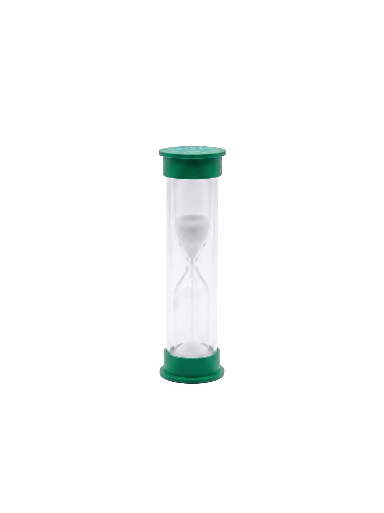
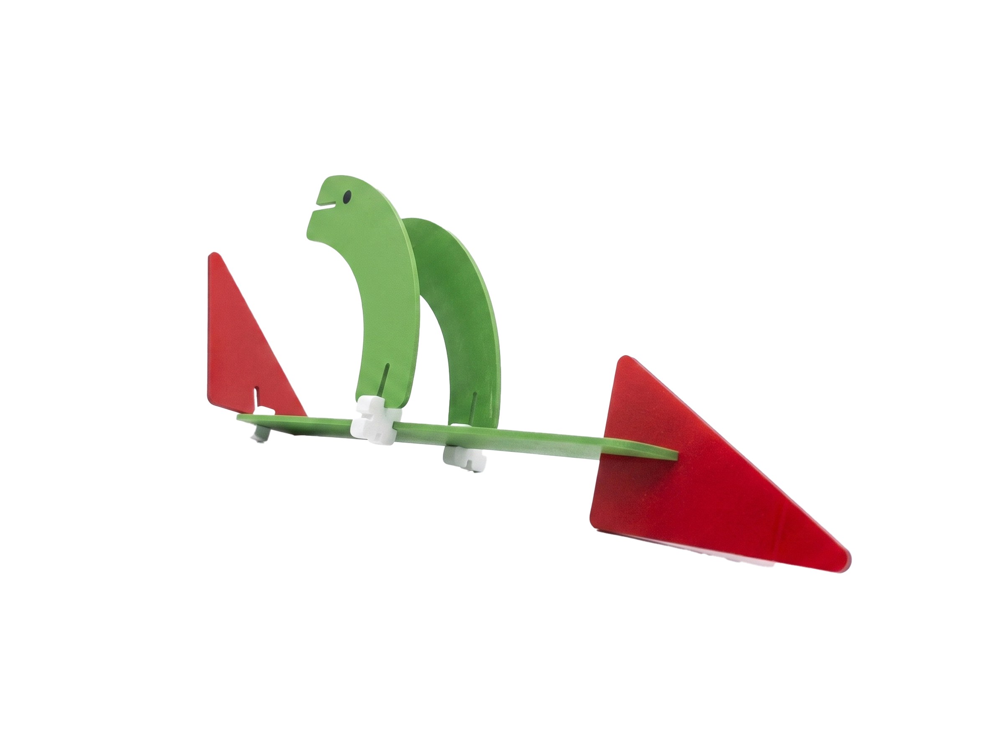

¡Construye, junta y gana!
¡Construye, junta y gana!
Un juego de mesa creativo donde deberás construir, conectar y dar forma a conceptos utilizando piezas y conectores. Cada partida desafía tu creatividad y rapidez mental.
¡Construye lo que imagines!
Toma una carta del mazo y escoge un concepto. El resto prepara sus piezas...

Construye el concepto con tus piezas. No hay respuesta única: la creatividad es la clave.

Explica tu construcción. El vocero elige la más ingeniosa.

Los conectores amplian tus posibilidades de construccion. Permiten crear estructuras mas complejas, agregar nuevas dimensiones y dar vida a ideas cada vez mas creativas.
Las fichas son tu recurso mas valioso. Usalas estrategicamente para obtener cartas especiales y aumentar tus posibilidades de completar la palabra FORMA.
El ganador de cada ronda recibe 4 fichas. El vocero recibe 2.
Las Cartas de Letra son las más importantes del juego y solo pueden obtenerse a través del Mazo Especial. Cada una contiene una letra diferente y, para ganar la partida, deberás reunir las cinco cartas necesarias hasta completar la palabra.


Esta experiencia digital explora ciertos conceptos presentes en Dale Forma, trasladándolos desde un contexto físico hacia un entorno interactivo.
A partir de las formas geométricas y los colores, elementos característicos del juego original, se construye un espacio de exploración donde el usuario participa activamente mediante la interacción, el movimiento y la animación.
La propuesta no busca replicar literalmente el juego físico, sino reinterpretar algunos de sus principios a través de las posibilidades propias del medio digital, permitiendo que las formas se transformen, se relacionen y generen nuevas composiciones visuales.